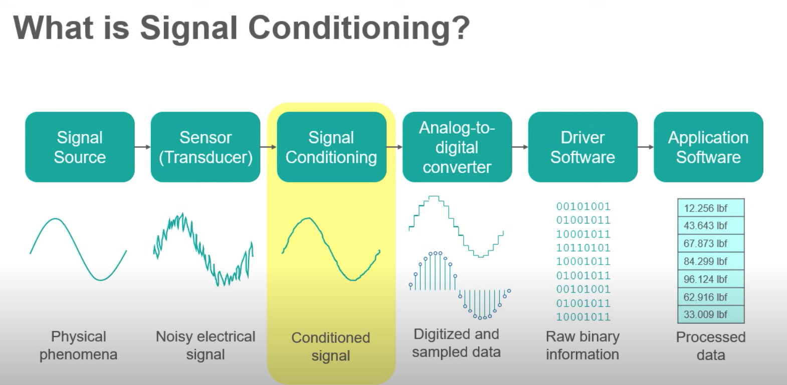
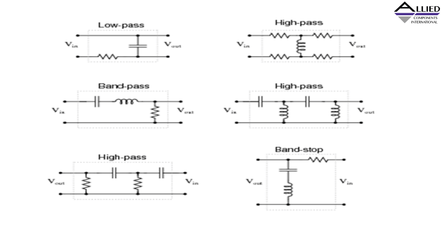
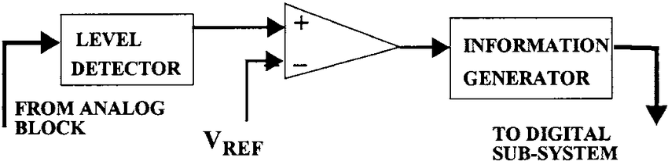
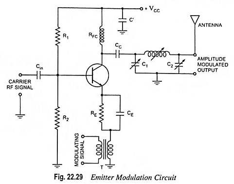
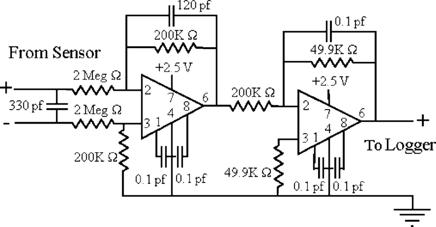

🛠️ Analog Circuit Applications
This section explores real-world analog circuits that utilize the components covered previously — showing how theory meets application in signal processing, control, measurement, and communication.
🎚️ 1. Signal Conditioning Circuits
- Voltage dividers: scale down signals
- Buffering: using op-amps to isolate source/load
- Filtering: RC/LC/op-amp filters for bandlimiting
- Amplification: to bring signals to measurable ranges

Used in sensor interfaces and ADC front-ends.
🎛️ 2. Analog Filters
Filters are essential for frequency selection in audio, radio, and instrumentation systems.
- Low-pass filter: Allows signals below a cutoff frequency
- High-pass filter: Opposite of LPF
- Band-pass: Filters within a narrow frequency range

Op-amp based active filters offer better performance over passive types.
🔄 3. Analog-to-Digital Interfaces
- Use op-amps for buffering & gain
- Use sample-and-hold circuits to capture signal snapshots
- Level shifters and protection diodes condition voltage ranges

Analog front-ends prepare real-world signals for digital conversion.
📶 4. RF Modulation Circuits
- Mixers: Combine two frequencies (e.g. local oscillator + carrier)
- Modulators: AM/FM/PM using diodes or transistors
- Demodulators: Extract baseband info from carrier

Analog modulation is still widely used in radio, TV, and communication systems.
💡 5. Sensor Applications
- Use bridge circuits (e.g. Wheatstone bridge) for resistive sensors
- Use op-amps for amplification & linearization
- Condition signals from thermocouples, photodiodes, strain gauges

Used in industrial and biomedical monitoring systems.
📘 Example: Precision Temperature Sensing
Thermistor Interface: Voltage divider + Op-amp buffer
V_out = V_supply × (R_therm / (R_therm + R_fixed))
Buffer → ADC → Microcontroller
🧠 Quiz
Which analog block is used to isolate stages in a circuit?
Answer: Voltage follower (buffer)
What type of filter passes only a narrow range of frequencies?
Answer: Band-pass filter
What’s the function of a sample-and-hold circuit?
Answer: Capture and freeze signal at a moment for digitization